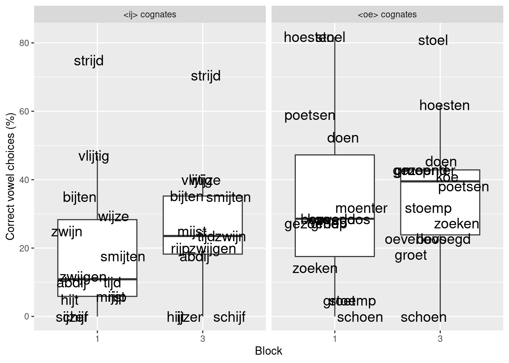
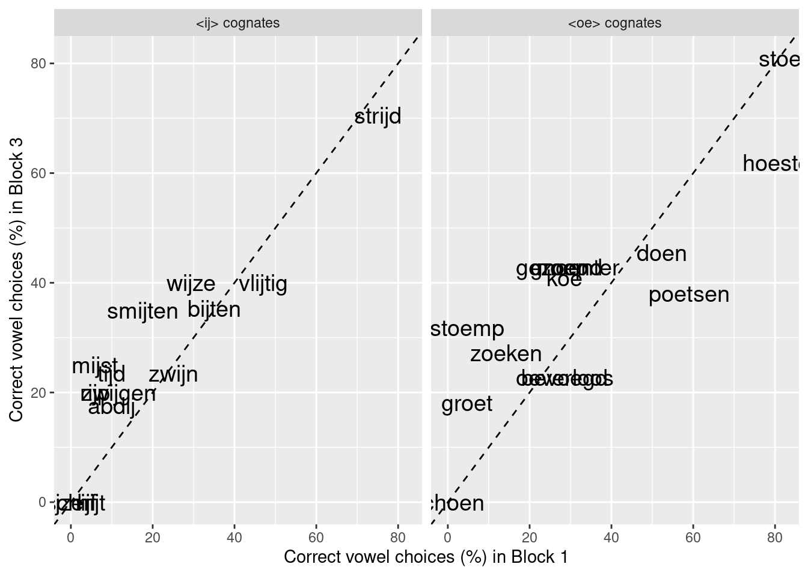
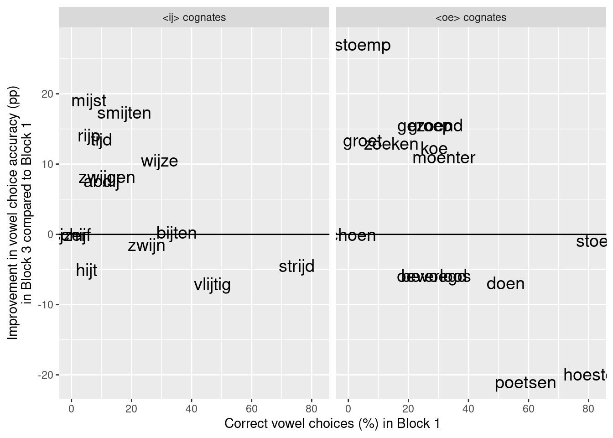
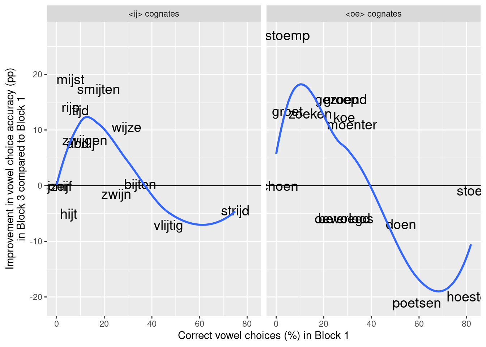
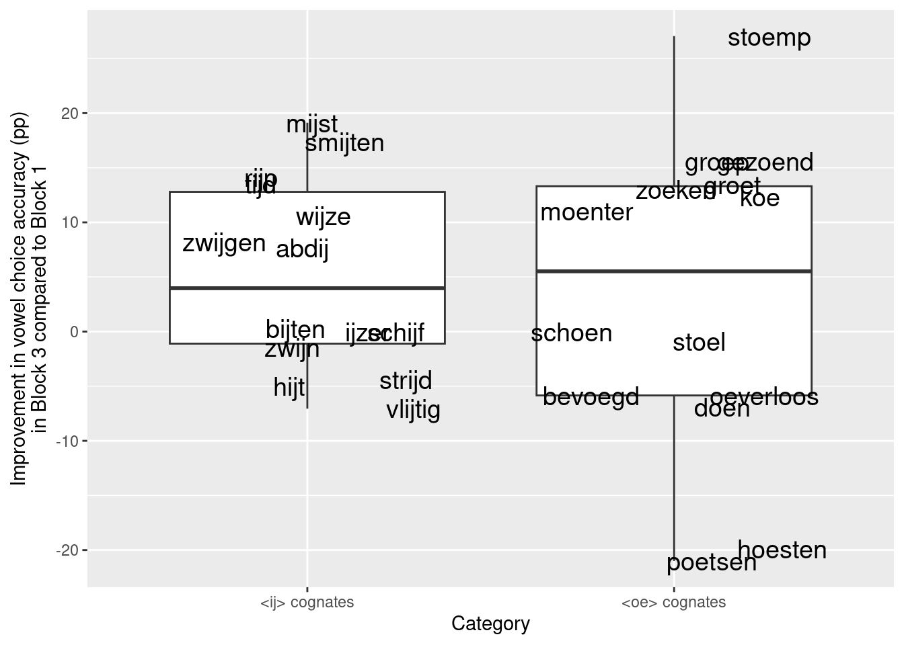
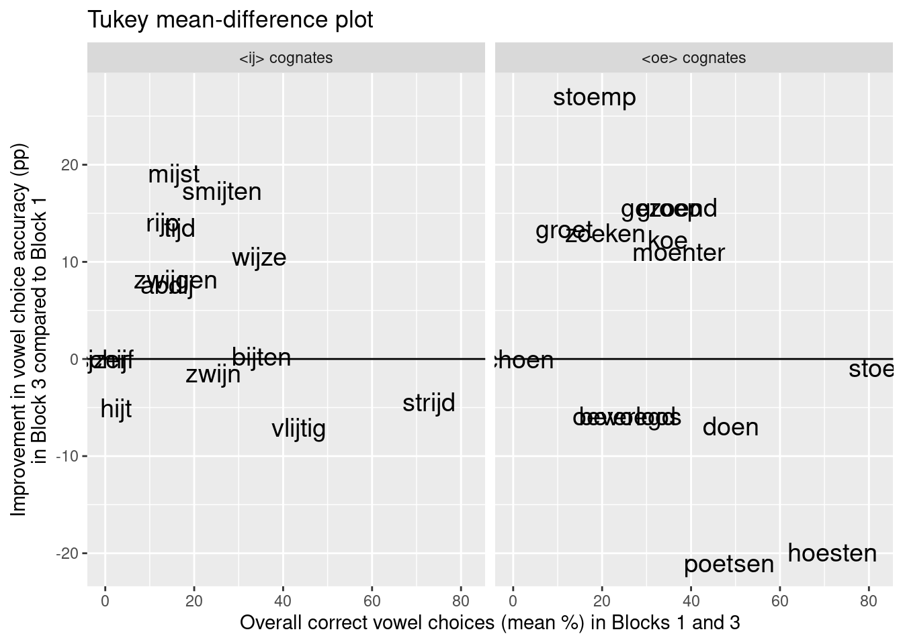

# Read in data from my institutional webpage:
dat <- read.csv("http://homeweb.unifr.ch/VanhoveJ/Pub/Data/CorrespondenceRules_Blocks.csv")
# 'Block' contains number but it's more useful to consider it a factor here:
dat$Block <- factor(dat$Block)Thinking about graphs
I firmly believe that research results are best communicated graphically. Straightforward scatterplots, for instance, tend to be much more informative than correlation coefficients to both novices and dyed-in-the-wool scholars alike. Often, however, it’s more challenging to come up with a graph that highlights the patterns (or lack thereof) that you want to highlight in your discussion and that your readership will understand both readily and accurately. In this post, I ask myself whether I could have presented the results from an experiment I carried out last year any better in a paper to be published soon.
The plot
Earlier this week, I received the page proofs of an article in which I report on a learning experiment in a context of receptive multilingualism (preprint). In the experiment, 80 speakers of German were asked to translate words from a closely related language, viz. Dutch. One of the goals of the experiment was to find out whether the participants could translate certain words (‘ij cognates’ and ‘oe cognates’; it doesn’t matter much for this blog post) more accurately when they occurred in the last part of the experiment (‘Block 3’) compared to in the first part (‘Block 1’). Here is the code that you can use to reproduce the plot showing the results (‘Figure 2’):
# Load the ggplot2 package for graphics
library(ggplot2)
# Draw plot of 'CorrectVowel' by 'Block':
ggplot(dat, aes(x = Block, y = CorrectVowel)) +
# draw boxplot, but don't draw outliers
# because next line plots all datapoints individually
geom_boxplot(outlier.shape = NA) +
# add individual datapoints and label them
# and jitter them horizontally (less overlap)
geom_text(size = 5, aes(label = Item),
position = position_jitter(height = 0, width = 0.3)) +
# separately for each category
facet_wrap(~ Category) +
# label axis
scale_y_continuous(name = "Correct vowel choices (%)") 
Some of the labels overlap, and I used a vector graphics editor (Inkscape) to move the labels horizontally to sort that out. I think that this plot contains a lot of useful information, especially compared to a run-of-the-mill barplot: not only are the individual datapoints plotted, they are also labelled so that it’s relatively easy to see that schoen was a particulary difficult word and that wijze saw a 10pp-increase in accuracy from Block 1 to Block 3.
Other options?
‘Relatively’ is the operative word in the preceeding paragraph, though: I don’t think I drew an awful plot, but I now think I could’ve presented my readership with some better alternatives. For instance, how about plotting the ‘before’ and ‘after’ scores in a slightly embellished scatterplot?
Update (2023-08-26): Nowadays, I’d use pivot_wider() in the tidyr package (part of the tidyverse) instead of dcast().
# We need the data in a slightly different format;
# use dcast from the reshape2 package:
library(reshape2)
# see http://seananderson.ca/2013/10/19/reshape.html
dat2 <- dcast(dat,
Item + Category ~ Block,
value.var = "CorrectVowel")
# Rename the columns
colnames(dat2) <- c("Item", "Category", "Block1", "Block3")
# dat2 # uncomment to see the results
# Scatterplot
ggplot(dat2, aes(x = Block1, y = Block3)) +
# label the datapoints
geom_text(size = 5, aes(label = Item)) +
# separate scatterplots for each category
facet_wrap(~ Category) +
# label axes
scale_x_continuous(name = "Correct vowel choices (%) in Block 1") +
scale_y_continuous(name = "Correct vowel choices (%) in Block 3") +
# add 'x = y' line
geom_abline(intercept = 0, slope = 1, linetype = "dashed") 
The dashed line divides the scatterplot such that stimuli appearing above the line are translated more accurately in Block 3 than in Block 1 and those that appear below it are translated less accurately in Block 3 than in Block 1. This can give a rough-and-ready impression of how many items showed an increase in accuracy as well as by what margin (vertical distance to the dashed line).
Instead of plotting the two stimulus categories separately, we could of course also plot them in the same graph. Here’s the R code to draw such a plot (plot not displayed here).
ggplot(dat2, aes(x = Block1, y = Block3, colour = Category)) +
geom_text(size = 5, aes(label = Item)) +
scale_x_continuous(name = "Correct vowel choices (%) in Block 1") +
scale_y_continuous(name = "Correct vowel choices (%) in Block 3") +
geom_abline(intercept = 0, slope = 1, linetype = "dashed")I think these scatterplots are a step up from the original boxplot comparisons, but they can still be criticised. First, I think that the dashed ‘x = y’ line might somehow come across as the fit line from a linear regression. We could obviously spell it out in the caption that this isn’t the case, but it’d be better if it were immediately obvious. Second, it is difficult to gauge distances with respect to a diagonal line: the vertical distance from the word groet to the dashed line is fairly large, but its perpendicular distance to the line is necessarily smaller, which might convey a false impression. Again, we could spell this out in the caption, but it’d be better if we didn’t have to.
In view of these two criticisms, the following graph shows the improvement in accuracy in Block 3 compared to Block 1 plotted against the baseline accuracies.
# Calculate difference between 3 and 1
dat2$Difference <- dat2$Block3 - dat2$Block1
# Draw scatterplot of baseline vs improvement
ggplot(dat2, aes(x = Block1, y = Difference)) +
geom_text(size = 5, aes(label = Item)) +
facet_wrap(~ Category) +
scale_x_continuous(name = "Correct vowel choices (%) in Block 1") +
scale_y_continuous(name = "Improvement in vowel choice accuracy (pp)\nin Block 3 compared to Block 1") +
geom_abline(intercept = 0, slope = 0, linetype = "solid")
The solid line again divides the stimuli that showed an improvement in accuracy and those that showed a decrease, but I think that a perfectly horizontal line is less readily mistaken for a regression fit line. Additionally, the improvement in accuracy for each item can be gauged straightforwardly as the distance to the dividing line – without the need to specify that it’s the vertical distance rather than the perpendicular distance that’s important (they’re both the same).
An additional benefit of this plot is that it can readily reveal peculiar patterns that might merit further investigation. For instance, the effect of ‘Block’ on accuracy seems to depend on baseline accuracy (i.e. it doesn’t seem to be additive): there is a decreasing shape to the scatterplot. We could highlight this trend by adding scatterplot smoothers to the panels, as in the graph below.
ggplot(dat2, aes(x = Block1, y = Difference)) +
geom_text(size = 5, aes(label = Item)) +
facet_wrap(~ Category) +
scale_x_continuous(name = "Correct vowel choices (%) in Block 1") +
scale_y_continuous(name = "Improvement in vowel choice accuracy (pp)\nin Block 3 compared to Block 1") +
geom_abline(intercept = 0, slope = 0, linetype = "solid") +
# add loess scatterplot smoother; suppress confidence bands
geom_smooth(method = "loess", se = FALSE) `geom_smooth()` using formula = 'y ~ x'
A last alternative that I’ll mention is to plot boxplots of the accuracy improvements rather than of the raw accuracy scores separately for Blocks 1 and 3:
ggplot(dat2, aes(x = Category, y = Difference)) +
geom_boxplot(outlier.shape = NA) +
geom_text(aes(label = Item), size = 5, position = position_jitter(height=0, width=0.3)) +
scale_y_continuous(name = "Improvement in vowel choice accuracy (pp)\nin Block 3 compared to Block 1")
I don’t really like this plot as it throws away much of the information we could have gained by using scatterplots. That said, highlighting a measure of the central tendency of the increases could be useful, so perhaps a combination of the scatterplots above and these boxplots could serve both purposes.
Open questions
This blog posts merely serves as an illustration of how the same data can be visualised in sundry ways and what factors go into choosing one graphic rather than the other options. One hugely important factor that perhaps isn’t always fully considered is how the graph is likely to be perceived by the audience.
This entails anticipating misinterpretations that result from a cursory reading of the caption and the surrounding text (as I’ve tried to show above), but on a more basic level it means taking into account the statistical literacy of your audience. Quantile–quantile plots, for instance, are useful for comparing two samples, but I don’t think the concept of quantiles is presently common currency for most readers.
What is sorely lacking in this discussion is concrete evidence about how easily and accurately graphical displays are interpreted by their intended audiences. For instance, while I think that a diagonal line in a scatterplot showing pre- and post-test data is often interpreted as a regression fit, I don’t actually know. This lack of empirical data is also the reason why I’m hesitant to make sweeping recommendations about ‘best practices’ when it comes to drawing graphs. A Bland–Altman (or Tukey mean-difference) plot, for instance, is easy enough to draw and explain (and similar to my second scatterplot; see R code below) and seems to be pretty common in the biomedical sciences. But I don’t recall ever coming across one when when reading journals in linguistics, applied linguistics or psychology, so most readers aren’t going to be familiar with it. It might turn out that readers of applied linguistics journals can readily and accurately interpret Bland–Altman plots – but it’s also possible that the additional – if simple – step of plotting differences against means rather than against baseline scores creates some sort of cognitive barrier.
Actual studies on how applied linguists, educators, policy-makers etc. interpret common and not-so-common visualisations could only serve to improve the communicative quality of our research papers, and it’s something I might look into in the months to come.
# A Bland-Altmann plot plots the mean of two paired observations
# against the difference between them.
# First compute mean:
dat2$Mean <- (dat2$Block1 + dat2$Block3)/2
# Then plot Bland-Altmann
ggplot(dat2, aes(x = Mean, y = Difference)) +
geom_text(size = 5, aes(label = Item)) +
facet_wrap(~ Category) +
scale_x_continuous(name = "Overall correct vowel choices (mean %) in Blocks 1 and 3") +
scale_y_continuous(name = "Improvement in vowel choice accuracy (pp)\nin Block 3 compared to Block 1") +
geom_abline(intercept = 0, slope = 0, linetype = "solid") +
ggtitle("Tukey mean-difference plot")
Software versions
devtools::session_info()─ Session info ───────────────────────────────────────────────────────────────
setting value
version R version 4.3.1 (2023-06-16)
os Ubuntu 22.04.3 LTS
system x86_64, linux-gnu
ui X11
language en_US
collate en_US.UTF-8
ctype en_US.UTF-8
tz Europe/Zurich
date 2023-08-26
pandoc 3.1.1 @ /usr/lib/rstudio/resources/app/bin/quarto/bin/tools/ (via rmarkdown)
─ Packages ───────────────────────────────────────────────────────────────────
package * version date (UTC) lib source
cachem 1.0.6 2021-08-19 [2] CRAN (R 4.2.0)
callr 3.7.3 2022-11-02 [1] CRAN (R 4.3.1)
cli 3.6.1 2023-03-23 [1] CRAN (R 4.3.0)
colorspace 2.1-0 2023-01-23 [1] CRAN (R 4.3.0)
crayon 1.5.2 2022-09-29 [1] CRAN (R 4.3.1)
devtools 2.4.5 2022-10-11 [1] CRAN (R 4.3.1)
digest 0.6.29 2021-12-01 [2] CRAN (R 4.2.0)
dplyr 1.1.2 2023-04-20 [1] CRAN (R 4.3.0)
ellipsis 0.3.2 2021-04-29 [2] CRAN (R 4.2.0)
evaluate 0.15 2022-02-18 [2] CRAN (R 4.2.0)
fansi 1.0.4 2023-01-22 [1] CRAN (R 4.3.1)
farver 2.1.1 2022-07-06 [1] CRAN (R 4.3.0)
fastmap 1.1.0 2021-01-25 [2] CRAN (R 4.2.0)
fs 1.5.2 2021-12-08 [2] CRAN (R 4.2.0)
generics 0.1.3 2022-07-05 [1] CRAN (R 4.3.0)
ggplot2 * 3.4.2 2023-04-03 [1] CRAN (R 4.3.0)
glue 1.6.2 2022-02-24 [2] CRAN (R 4.2.0)
gtable 0.3.3 2023-03-21 [1] CRAN (R 4.3.0)
htmltools 0.5.5 2023-03-23 [1] CRAN (R 4.3.0)
htmlwidgets 1.6.2 2023-03-17 [1] CRAN (R 4.3.1)
httpuv 1.6.11 2023-05-11 [1] CRAN (R 4.3.1)
jsonlite 1.8.7 2023-06-29 [1] CRAN (R 4.3.1)
knitr 1.39 2022-04-26 [2] CRAN (R 4.2.0)
labeling 0.4.2 2020-10-20 [1] CRAN (R 4.3.0)
later 1.3.1 2023-05-02 [1] CRAN (R 4.3.1)
lattice 0.21-8 2023-04-05 [4] CRAN (R 4.3.0)
lifecycle 1.0.3 2022-10-07 [1] CRAN (R 4.3.0)
magrittr 2.0.3 2022-03-30 [1] CRAN (R 4.3.0)
Matrix 1.6-0 2023-07-08 [4] CRAN (R 4.3.1)
memoise 2.0.1 2021-11-26 [2] CRAN (R 4.2.0)
mgcv 1.9-0 2023-07-11 [4] CRAN (R 4.3.1)
mime 0.10 2021-02-13 [2] CRAN (R 4.0.2)
miniUI 0.1.1.1 2018-05-18 [1] CRAN (R 4.3.1)
munsell 0.5.0 2018-06-12 [1] CRAN (R 4.3.0)
nlme 3.1-162 2023-01-31 [4] CRAN (R 4.2.2)
pillar 1.9.0 2023-03-22 [1] CRAN (R 4.3.0)
pkgbuild 1.4.2 2023-06-26 [1] CRAN (R 4.3.1)
pkgconfig 2.0.3 2019-09-22 [2] CRAN (R 4.2.0)
pkgload 1.3.2.1 2023-07-08 [1] CRAN (R 4.3.1)
plyr 1.8.8 2022-11-11 [1] CRAN (R 4.3.1)
prettyunits 1.1.1 2020-01-24 [2] CRAN (R 4.2.0)
processx 3.8.2 2023-06-30 [1] CRAN (R 4.3.1)
profvis 0.3.8 2023-05-02 [1] CRAN (R 4.3.1)
promises 1.2.0.1 2021-02-11 [1] CRAN (R 4.3.1)
ps 1.7.5 2023-04-18 [1] CRAN (R 4.3.1)
purrr 1.0.1 2023-01-10 [1] CRAN (R 4.3.0)
R6 2.5.1 2021-08-19 [2] CRAN (R 4.2.0)
Rcpp 1.0.11 2023-07-06 [1] CRAN (R 4.3.1)
remotes 2.4.2 2021-11-30 [2] CRAN (R 4.2.0)
reshape2 * 1.4.4 2020-04-09 [1] CRAN (R 4.3.1)
rlang 1.1.1 2023-04-28 [1] CRAN (R 4.3.0)
rmarkdown 2.21 2023-03-26 [1] CRAN (R 4.3.0)
rstudioapi 0.14 2022-08-22 [1] CRAN (R 4.3.0)
scales 1.2.1 2022-08-20 [1] CRAN (R 4.3.0)
sessioninfo 1.2.2 2021-12-06 [2] CRAN (R 4.2.0)
shiny 1.7.4.1 2023-07-06 [1] CRAN (R 4.3.1)
stringi 1.7.12 2023-01-11 [1] CRAN (R 4.3.1)
stringr 1.5.0 2022-12-02 [1] CRAN (R 4.3.0)
tibble 3.2.1 2023-03-20 [1] CRAN (R 4.3.0)
tidyselect 1.2.0 2022-10-10 [1] CRAN (R 4.3.0)
urlchecker 1.0.1 2021-11-30 [1] CRAN (R 4.3.1)
usethis 2.2.2 2023-07-06 [1] CRAN (R 4.3.1)
utf8 1.2.3 2023-01-31 [1] CRAN (R 4.3.1)
vctrs 0.6.3 2023-06-14 [1] CRAN (R 4.3.0)
withr 2.5.0 2022-03-03 [2] CRAN (R 4.2.0)
xfun 0.39 2023-04-20 [1] CRAN (R 4.3.0)
xtable 1.8-4 2019-04-21 [1] CRAN (R 4.3.1)
yaml 2.3.5 2022-02-21 [2] CRAN (R 4.2.0)
[1] /home/jan/R/x86_64-pc-linux-gnu-library/4.3
[2] /usr/local/lib/R/site-library
[3] /usr/lib/R/site-library
[4] /usr/lib/R/library
──────────────────────────────────────────────────────────────────────────────